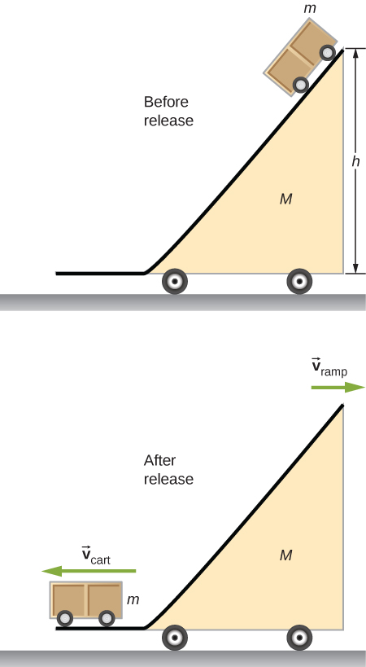

Challenge Problems
A 65-kg person jumps from the first floor window of a burning building and lands almost vertically on the ground with a horizontal velocity of 3 m/s and vertical velocity of . Upon impact with the ground he is brought to rest in a short time. The force experienced by his feet depends on whether he keeps his knees stiff or bends them. Find the force on his feet in each case.

- First find the impulse on the person from the impact on the ground. Calculate both its magnitude and direction.
- Find the average force on the feet if the person keeps his leg stiff and straight and his center of mass drops by only 1 cm vertically and 1 cm horizontally during the impact.
- Find the average force on the feet if the person bends his legs throughout the impact so that his center of mass drops by 50 cm vertically and 5 cm horizontally during the impact.
- Compare the results of part (b) and (c), and draw conclusions about which way is better.
You will need to find the time the impact lasts by making reasonable assumptions about the acceleration opposite to the motion. Although the force is not constant during the impact, working with constant average force for this problem is acceptable.
Two projectiles of mass and are fired at the same speed but in opposite directions from two launch sites separated by a distance D. They both reach the same spot in their highest point and strike there. As a result of the impact they stick together and move as a single body afterwards. Find the place they will land.
Two identical objects (such as billiard balls) have a one-dimensional collision in which one is initially motionless. After the collision, the moving object is stationary and the other moves with the same speed as the other originally had. Show that both momentum and kinetic energy are conserved.
A ramp of mass M is at rest on a horizontal surface. A small cart of mass m is placed at the top of the ramp and released.
What are the velocities of the ramp and the cart relative to the ground at the instant the cart leaves the ramp?
Find the center of mass of the structure given in the figure below. Assume a uniform thickness of 20 cm, and a uniform density of
![A diagram of several masses arranged to look like a model of a person is shown. At the top is a sphere, radius 8 cm. Centered below it is a rectangle 25 cm wide horizontally and 60 cm tall that looks like the body of the person. On either side of the rectangle are rectangles measuring 60 cm horizontally and 5 cm tall that look like the outstretched arms. The tops or the arms are aligned with the top of the body, and each arm extends out from the sides of the body horizontally. At the end of each arm is a 5 cm wide square. Below the body are the legs. Each leg is 70 cm tall and 8 cm wide. The tops of the legs are aligned with the bottom of the body. The outer sides of the legs are aligned with the sides o the body. Below each leg are the feet, which are 3 cm tall and 15 cm wide. The inner side of each foot is aligned with the inner side of the leg above it.](cd26eaf2b35802d6a6e1ea805004cfe14a7494ea.jpeg)